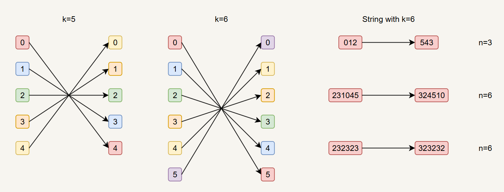

University of Guelph / Work Term Report
Generating complement-avoiding sequences
A reflection on a summer spent asking how mathematical structure can become an algorithm - and how an open-ended research problem changes the person solving it.
The co-op officially began in May; the main research project began in mid-June. The work focused on a problem in theoretical computer science, specifically combinatorics.
The research question
The combinatorial constraint
Imagine a cyclic string built to contain carefully chosen patterns. A related object, a de Bruijn sequence, contains every possible string of a given length. Complement avoiding sequences add a constraint: whenever one string appears, its complement cannot.
A maximal sequence contains exactly one member of each complementary pair, while excluding self-complementary strings. The challenge was not just to find such sequences, but to design and prove a construction that generates them in optimal constant time per symbol.

From question to construction
An iterative research process
The project developed through a cycle of literature review, examples, candidate constructions, and proof. At each stage, the results determined which question or case needed to be examined next.
Orient
I learned the terminology and read existing combinatorics literature to understand what was already known and where the open space was.
Explore
I examined examples, recorded patterns, developed possible approaches, and used counterexamples to identify promising directions.
Prove
Promising constructions had to move from an observed pattern to a proof. Failed approaches were useful evidence, not wasted effort.
Translate
After finding the constructions, the work shifted toward writing the definitions, algorithms, proofs, and results so another reader could follow them.
What emerged
The resulting construction
The main outcome was an optimal algorithm for generating the sequence in all conditions, with the construction shaped by the alphabet size and the window length.
An even-k construction was found, but its technical details are intentionally omitted here because they are too complex for this report.
Five outcomes, in retrospect
Learning how to do research
The most important result was not a single algorithm. It was becoming more independent in the habits that make research possible.
Research papers were slow at first because they assumed background knowledge I had not yet developed. Over time, I became better at identifying the important concepts, tracing references, and using earlier papers to decode unfamiliar terminology. Weekly meetings could then focus on harder research questions instead of basic explanations.
Communicating mathematics is different from solving it. Ideas that seem obvious to the author still need to be made explicit for the reader. Feedback improved the organization of definitions and proofs, and made my explanations more precise.
Open-ended work strengthened my ability to break a large problem into smaller ones, test approaches, and continue when there was no predefined solution path. By the end of the term, I could develop and apply approaches with much less help.
I became more comfortable finding literature, following references, and identifying the origins of mathematical ideas. I also learned that information literacy means understanding the context and assumptions behind a result, not merely locating it.
With only weekly reporting, day-to-day planning was my responsibility. Short-term goals and meeting preparation created structure, while flexibility made room for experiments and unexpected turns. I learned to move on from an unproductive direction without abandoning careful thinking.
A final reflection
Research requires independence, precision, and persistence.
This work term taught me how research is actually conducted: finding and understanding prior work, exploring uncertain approaches, learning from failed ideas, developing a solution, communicating mathematical results, and managing the process independently. I finished with a substantially greater ability to work on open-ended mathematical and computational problems - and a clearer understanding of what future research will ask of me.